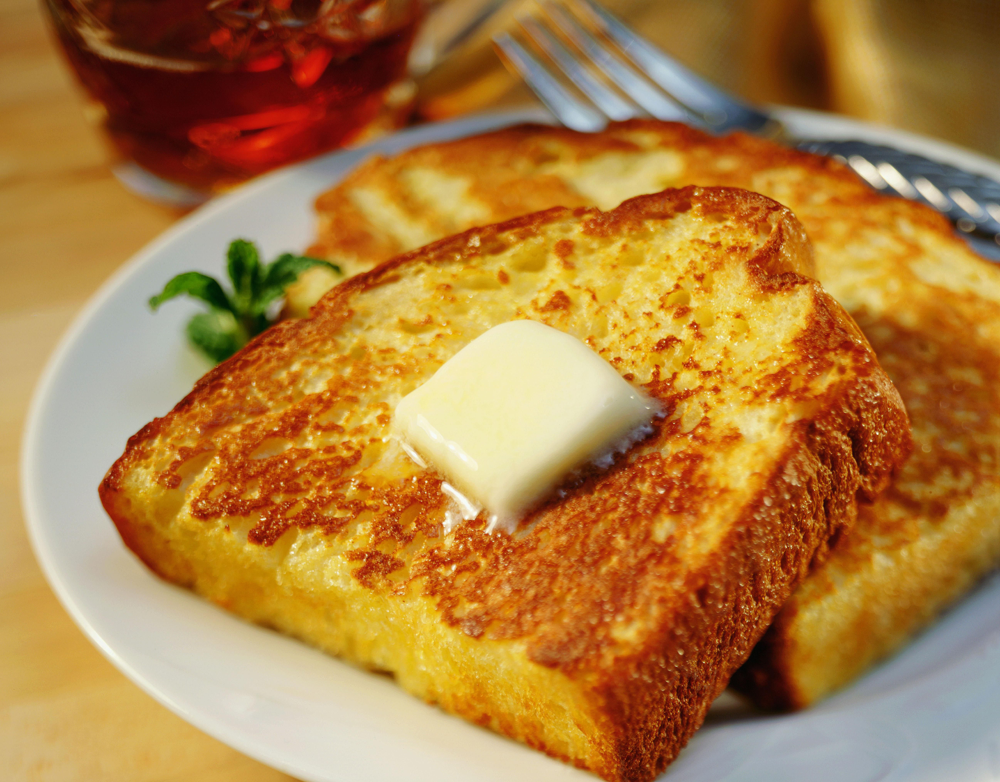

French Toast

Description
French toast is a sweet, fluffy breakfast dish that satisfies the sweet and the salty tooth at the same time,
bringing eggs, toast, and cinnamon together into a lovely start to your day.
Ingredients
- All-purpose flour
- Milk
- Eggs
- White sugar
- Vanilla extract
- Ground cinnamon
- Salt
- Slices of bread
Directions
- Measure flour into a large mixing bowl. Slowly whisk in milk.
Whisk in eggs, sugar, vanilla extract, cinnamon, and salt until smooth.
- Heat a lightly oiled griddle or frying pan over medium heat.
- Soak bread slices in milk mixture until saturated.
- Working in batches, cook bread on the preheated griddle or pan
until golden brown on each side. Serve hot.